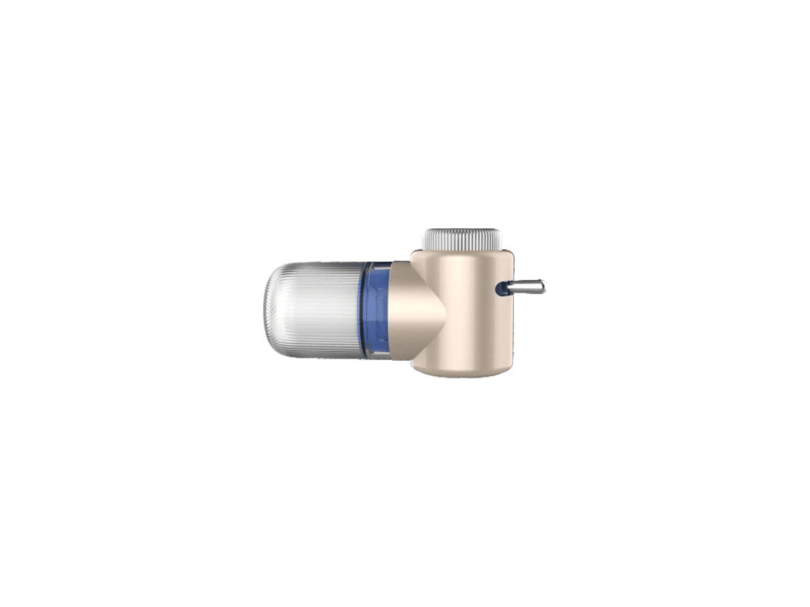

Robinet
RobinetRP-F01
Filtre de robinet classique
SKU: RP-F01
MOQ : à confirmer lors de la demande
Accueil/Produits/Filtres de robinet/ RP-F08

Filtres de robinet
Filtres de robinet (JK-D1) — trois options. RP-F08 mène la famille.
RP-F08 est une famille de filtres de robinet : trois options sur la même plateforme céramique de 1,5 à 2 L/min et 2 à 5 µm — le modèle avec affichage de la durée de vie du filtre (affichage 100% numérique, lumière bleue hydraulique) ; le modèle à microbulles (double sortie, microbulles de 1 à 100 µm pour les soins de la peau et le nettoyage) ; et le modèle de nettoyage à la mousse (quatre modes, pulvérisateur de mousse à main). Les spécifications sont confirmées par modèle et par commande.
Les options d’affichage et de finition sont confirmées par commande.
La tension / fréquence est configurable selon le pays de destination. Les autres configurations sont confirmées par commande.
RP-F08 est une famille de filtres de robinet (JK-D1) avec trois options sur la même plateforme céramique de 1,5 à 2 L/min et 2 à 5 µm : le modèle avec affichage de la durée de vie du filtre (affichage 100% numérique, lumière bleue hydraulique), le modèle à microbulles (double sortie, microbulles de 1 à 100 µm pour les soins de la peau et le nettoyage) et le modèle de nettoyage à la mousse (quatre modes, pulvérisateur de mousse à main). Les trois partagent une durée de vie de la cartouche de 3 à 6 mois, une température de l’eau de 5 à 38°C, une pression de service de 0,1 à 0,4 MPa et l’eau du robinet municipale comme source d’eau. Les dimensions sont confirmées par commande.
Quelle est la quantité minimale de commande ?
La première commande est de 200 unités par modèle, et les réassorts sont de 500 unités.
Puis-je commander un échantillon avant une commande en volume ?
Oui. Les échantillons sont prêts en 15 jours, et les frais d'échantillon sont remboursés sur votre première commande en gros. Les commandes en gros prennent 40 jours après approbation de l'échantillon et sont expédiées FOB Shenzhen.
Combien de temps dure la cartouche ?
La durée de vie de la cartouche est de 3 à 6 mois pour les trois modèles.
Trois options de filtre de robinet — coter comme RP-F08 et préciser l’option (affichage de la durée de vie du filtre, microbulles ou nettoyage à la mousse). Le modèle avec affichage de la durée de vie du filtre est livré avec un couvercle foncé ou transparent.
Survolez l'image d'une variante pour voir ses spécifications. Sur écran tactile, touchez une image.



Spécifications complètes de chaque modèle, côte à côte. Le tableau des spécifications ci-dessous montre les valeurs de RP-F08.
| Spécification | RP-F08-1 — affichage de la durée de vie du filtre (JK-D1) | RP-F08-2 — microbulles (JK-H1) | RP-F08-3 — nettoyage à la mousse (JK-E2) |
|---|---|---|---|
| Type | Purificateur de robinet intelligent | Purificateur de robinet à microbulles pour soins de la peau | Filtre de robinet 2-en-1 pour nettoyage à la mousse |
| Forme | Cartouche verticale sur base horizontale | Corps cylindrique horizontal | Base large, deux cartouches + tuyau enroulé + pulvérisateur à main |
| Écran | Affichage 100% numérique de la durée de vie du filtre | Aucun | Affichage 100% sur certaines variantes |
| Sorties | Sortie unique filtrée | Double : eau purifiée + eau à microbulles | Quatre modes : eau brute / eau pure / mousse / douche |
| Fonction spéciale | Lumière bleue hydraulique ; couvercle à encliqueter ; levier de poignée | Microbulles 1–100 µm ; nettoie et élimine les résidus de pesticides | Nettoyage à la mousse en une touche ; pulvérisateur de mousse à main |
| Couleurs | Bleu foncé, gris, jaune, argent | Or champagne, bleu-argent, violet | Foncé, beige, blanc, argent |
| Débit nominal | 1.5-2 L/min | 1.5-2 L/min | 1.5-2 L/min |
| Précision de filtration | 2-5 µm (céramique) | 2-5 µm (céramique) | 2-5 µm (céramique) |
| Température de l’eau | 5-38°C | 5-38°C | 5-38°C |
| Pression de service | 0.1-0.4 MPa | 0.1-0.4 MPa | 0.1-0.4 MPa |
| Source d'eau | Eau du robinet municipale | Eau du robinet municipale | Eau du robinet municipale |
| Durée de vie de la cartouche | 3-6 mois | 3-6 mois | 3-6 mois |
| Dimensions | À confirmer par commande | À confirmer par commande | À confirmer par commande |
Le débit nominal, la précision de filtration, la température de l’eau, la pression de service, la source d’eau et la durée de vie de la cartouche sont identiques sur les trois modèles (valeurs catalogue). Les modèles diffèrent par la forme, l’affichage, les sorties et la fonction spéciale. Le modèle avec affichage de la durée de vie du filtre est livré avec un couvercle foncé ou transparent.
7 lignes de spécifications du catalogue ROPureOEM.
| Débit nominal | 1.5-2 L/min |
|---|---|
| Précision de filtration | 2-5 µm (céramique) |
| Température de l’eau | 5-38°C |
| Pression de service | 0.1-0.4 MPa |
| Source d'eau | Eau du robinet municipale |
| Durée de vie de la cartouche | 3-6 mois |
| Dimensions | À confirmer par commande |
Les spécifications sont tirées du catalogue ROPureOEM. Lorsqu'une valeur n'est pas encore confirmée, elle est indiquée comme « Confirmé par commande » — nous ne publions pas de chiffres non confirmés.
RobinetFiltre de robinet classique
SKU: RP-F01
MOQ : à confirmer lors de la demande
 Robinet
RobinetFiltre de robinet rotatif à 360°
SKU: RP-F02
MOQ : à confirmer lors de la demande
 Robinet
RobinetFiltre de robinet en fibre de carbone
SKU: RP-F06
MOQ : à confirmer lors de la demande
 Robinet
RobinetFiltre d'eau pour robinet — intégré
SKU: RP-F10
MOQ : à confirmer lors de la demande